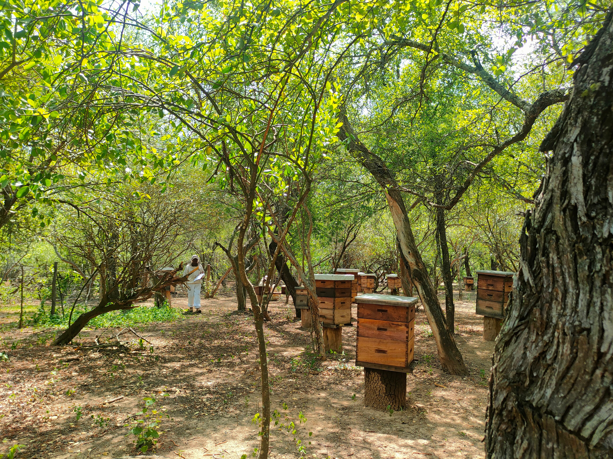
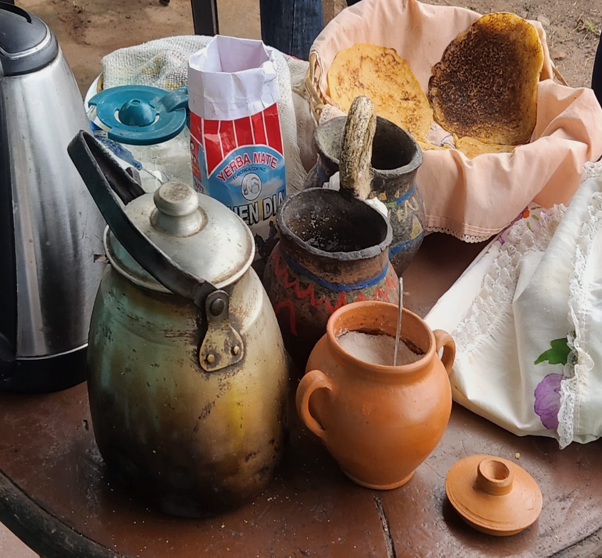
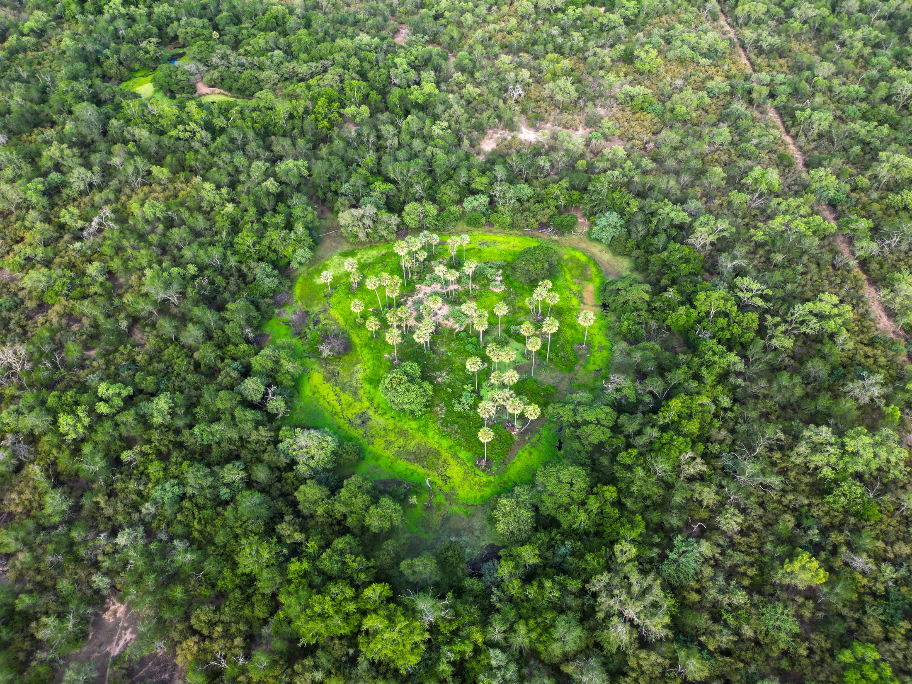
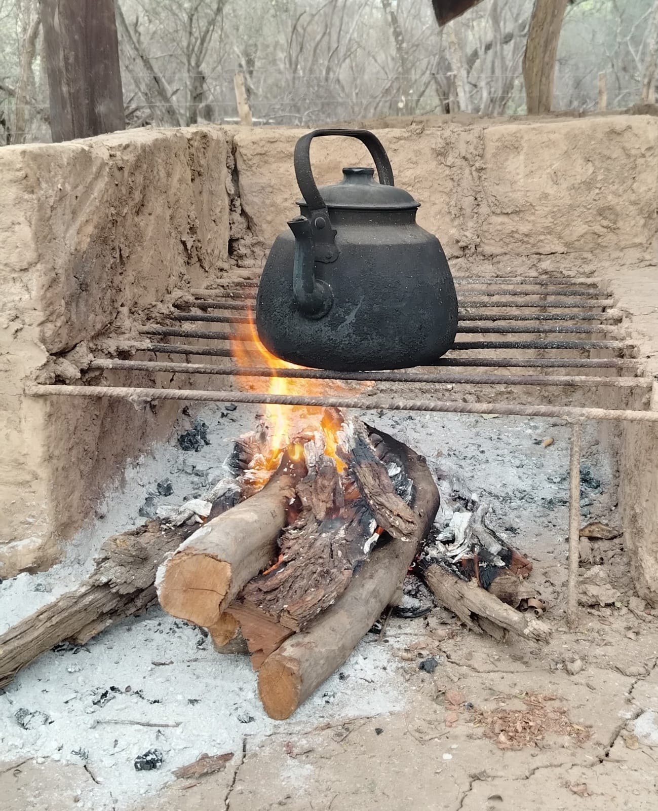
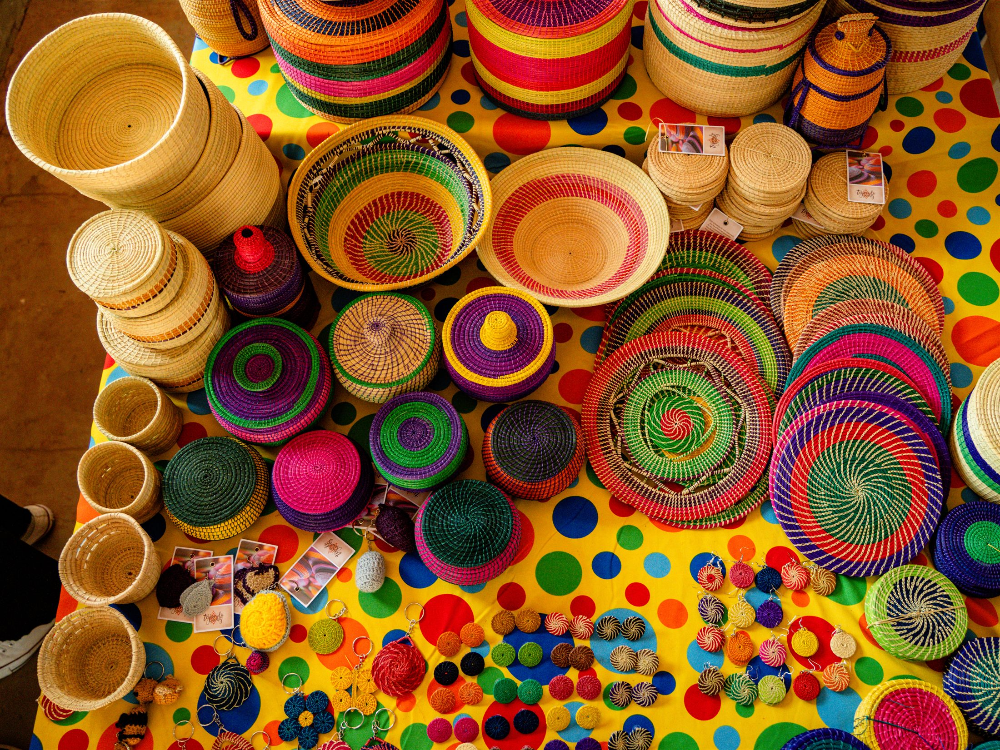
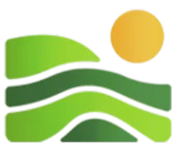

Biodiversidad
Avistar la fauna del Chaco —jaguares, aves, la vida del bosque seco— con quienes conocen cada rastro.
01
Apartado 04 · Línea productiva
Recibir a quien quiere conocer el Gran Paisaje de la mano de las comunidades que lo habitan, y dejar que ese encuentro sostenga el cuidado del monte.
El enfoque
NATIVA acompaña a las comunidades del Chaco en la construcción de iniciativas de turismo comunitario, fortaleciendo sus capacidades para identificar, valorar y compartir aquello que hace único a su territorio. A través de procesos participativos de capacitación y planificación, las propias comunidades diseñan experiencias que resaltan su biodiversidad, sus paisajes, su gastronomía, sus artesanías, sus conocimientos ancestrales y las tradiciones que han conservado por generaciones.
Lo que se pone en valor
Cada comunidad comparte lo que la hace única: la vida del bosque, el agua, la mesa, el oficio y la memoria.

Avistar la fauna del Chaco —jaguares, aves, la vida del bosque seco— con quienes conocen cada rastro.
01
Recorrer ríos, humedales y monte, y leer el pulso del agua que da forma al territorio.
02
Compartir la mesa y los conocimientos ancestrales de las familias que habitan el paisaje.
03
Ver nacer las piezas de fibra y madera, y las tradiciones vivas de los pueblos del Chaco.
04El valor
El turismo comunitario pone en valor el patrimonio natural y cultural del Chaco, permitiendo que los visitantes vivan experiencias auténticas mientras generan ingresos que fortalecen las economías locales. Así, el territorio deja de ser únicamente un espacio por conservar y se convierte en el origen de oportunidades, identidad y bienestar para las comunidades que lo habitan.
Cada experiencia turística nace de un territorio vivo, donde la biodiversidad, la gastronomía, la cultura y los conocimientos locales se transforman en oportunidades para las comunidades y en razones para conservar el bosque.
Datos clave
Comunidades del Chaco desarrollando iniciativas de turismo comunitario.
Experiencias diseñadas por las propias comunidades, no para ellas.
Capacitación y planificación conjunta para identificar y valorar lo propio.
Cada estación abre una cara distinta del paisaje chaqueño.
En el mapa
Aguayrenda, Chimeo y Camatindi.
Ubicá en el geoportal los tres puntos de turismo comunitario, junto a los predios ganaderos, los centros apícolas y la Red de artesanas Alma de Monte.
